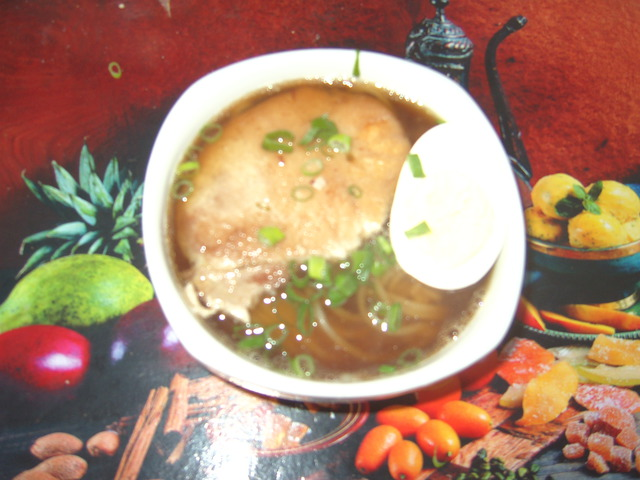

No ano passado (2015), joguei um RPG para Playstation 2 chamado Persona 3 FES. O enredo se passa no Japão e o jogo mostra vários aspectos da cultura japonesa. Dentre eventos que aparecem frequentemente estão cenas onde os personagens saem para comer lámen (ou "ramen", em Japonês, um prato à base de macarrão muito popular no Japão) e takoyaki (um bolinho de polvo assado).
Pois é... eu devo admitir que, apesar de ser descendente de japoneses, eu nunca tinha comido lámen nem takoyaki. O macarrão que conheço desde a infância é apenas o udon (macarrão simples) cozido na água com shoyu (molho de soja). A única coisa com "lámen" no nome que eu tinha comido era o macarrão instantânio Nissin Miojo, que diz ser um "lámen instantâneo", mas isso provavelmente nem conta :P . Sempre ouvi falar tanto do lámen quanto do takoyaki, mas nunca tinha parado para pensar neles. Só depois de jogar o Persona 3 eu fui me tocar de que nunca tinha comido! ... Sim, é estranho, mas é verdade.
Alguns meses atrás, minha mãe e eu nos deparamos com uma lámen-ya (restaurante especializado em lámen) e resolvemos entrar. Pedimos o prato mais barato, mais para ter uma noção do que era um lámen. Veio uma tigela grande, com um monte de caldo, macarrão e flocos de algas marinhas dentro, e umas três fatias de carne de porco bem fininhas e meio ovo cozido em cima. Se estava bom? Estar, estava, mas... não tanto como eu achava que deveria. O gosto não ia muito além do meu velho conhecido udon com shoyu, e deixou aquela impressão de que algo não estava certo... Nem sei se os donos do lugar são japoneses (os funcionários pelo menos não eram) e não sei o quanto se aproxima de uma lámen-ya do Japão, mas a comida deixou a desejar, na minha opinião. Por mais que fosse a opção mais simples, e mesmo não sabendo como deveria ser o sabor de um lámen "de verdade", acredito que o tão aclamado lámen seja algo único, em um "nível acima", e que não dê para simplesmente comparar com udon cozido às pressas ao shoyu. Depois desta frustração, resolvi deixar a curiosidade sobre o lámen de lado por um tempo. Quem sabe outro dia, em um restaurante melhor...
O tempo se passou e chegou o fim de março de 2016. Eu estava escrevendo uma fan fiction do já citado Persona 3. Era uma cena em que aparece uma comida japonesa e resolvi pesquisar para diminuir as chances de escrever besteira. Esta pesquisa me levou a um site com receitas de comida japonesa e, por acaso, acabei caindo numa receita de lámen! Aí aconteceu algo que eu não tinha esperado. Simplesmente deu a louca de tentar fazer o tal do lámen...
Logo de cara já enrosquei num problema. A receita estava em Inglês e, para minha surpresa, o vocabulário de culinária era completamente diferente do que eu estava acostumada. Muitas vezes, traduzir os verbos e nomes de ingredientes ao pé da letra não faz sentido nenhum em Português. Por exemplo, eu nunca iria adivinhar que "strain" significa "coar", que "sesame oil" é "óleo de gergelim" e que "baking soda" significa "bicarbonato de sódio"! Fora as abreviações, como "tsp" ("teaspoon", "colher de chá") e "tbsp" ("tablespoon", "colher de sopa" - não é "colher de mesa"!), e as medidas de peso, "lb" ("pounds", 1lb são aproximadamente 453 gramas) e "oz" ("ounce", 1oz dá mais ou menos 28 gramas). Precisei pesquisar sobre termos de culinária em Inglês para descobrir tudo isso. Depois que consegui decifrar os termos, até que deu pra entender. No fim das contas, a conclusão foi que a receita não parecia muito complicada, e mesmo assim, eu tive a impressão de que esse lámen tinha o potencial de sair melhor do que aquele do restaurante!
Eu não sou muito de cozinhar (minha falta de vontade para cozinhar, além de falta de habilidade na cozinha em parte graças às dificuldades geradas pela minha deficiência visual, são algumas das minhas grandes preocupações), mas já que aquela ideia louca conseguiu me motivar, decidi tentar tirar proveito da situação. Quem sabe, se arranjar incentivos para praticar, eu acabe adquirindo o gosto pela coisa, ou pelo menos passe a achar um pouco menos ruim...
Até que eu consigo cortar bem os ingredientes (verduras por exemplo), apesar de levar mais tempo do que deveria. O problema maior é domar o bicho de várias bocas chamado fogão. Sem enxergar, ainda não sei como identificar quando as coisas estão no ponto, por exemplo. Por enquanto minha mãe está me ajudando com o fogão.
Felizmente, não tivemos problemas ao seguir a receita e o nosso lámen saiu! Abaixo vai uma foto:

O que fiz diferente da receita foi que não usei a gambiarra do macarrão cabelo de anjo no bicarbonato de sódio que deveria funcionar como substituto do macarrão japonês (usamos um macarrão fresco para lámen de uma lojinha japonesa perto de casa). Também não coloquei moyashi (broto de feijão) na cobertura porque não sou muito fã.
No fim das contas, felizmente ficou do nosso agrado. Deu um pouco de trabalho mas acho que valeu a pena. E sim, ficou melhor do que aquele do restaurante! Ainda não sei como deveria ser o sabor do lámen de verdade, mas de acordo com os comentários de visitantes na página da receita, alguns disseram que o resultado lembrou o lámen que comeram no Japão. Então, vou considerar isso como uma aproximação razoável.
Pronto. O lámen já foi. Agora falta o takoyaki...